Бренд
В основе айдентики лежит метафора записной книги или тетради, которые могут принадлежать как учёному, так и любому обывателю. Главное, что объединяет эти роли — желание исследовать тему витаминов. Именно поэтому основные графические элементы стиля задействуют предметы канцелярии, бумажные листы с сеткой и многое другое.
> слова
открытый
смелый
прогрессивный
прямолинейный
рассудительный
начитанный
умный
яркий
модный
творческий
трудолюбивый
дружелюбный
разговорчивый
экономный
> ценности
1. стремление уменьшить потребление продуктов животного происхождения
2. физическое и эмоциональное здоровье
3. высокая степень осведомлённости в теме витаминов и продуктов
4. доступность знаний о витаминах и продуктах
5. лёгкость поиска информации о необходимом продукте/витамине
> миссия
Обеспечить возможность легко находить витаминно-альтернативный продукт.
Логотип
> размерность
> концепция
Логотип представляет собой знак, в котором можно прочесть как символ B, так и символ 8, из которых состоит название медиа-сервиса. Будучи отсылкой к точности и выверенности научных данных, он был построен словно по линейке.
> построение
Знак лаконичен по структуре и состоит из двух кругов и прямоугольника. Контур, образованный слитыми кругами, прерывается, давая возможность зрителю увидеть оба знака нейминга.
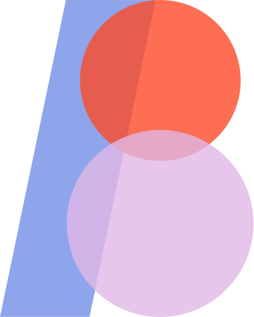
> охранное поле
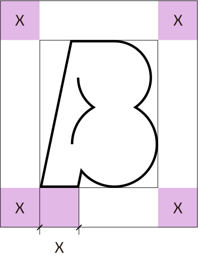
> инверсия
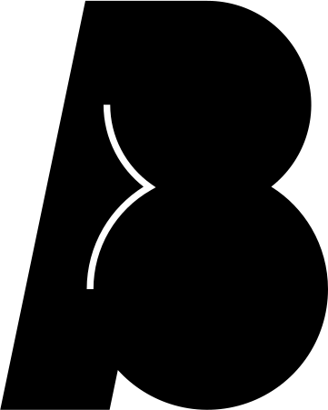
> цветовые сочетания
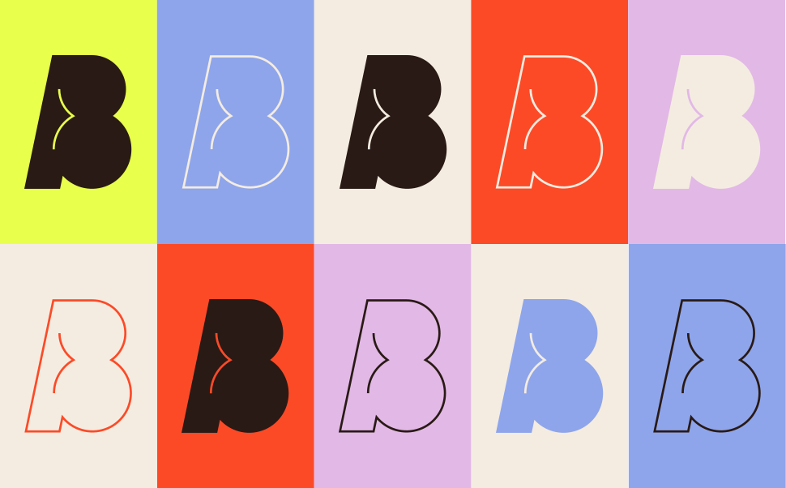
> ограничения
Логотип нельзя:
1. Использовать в цветовых сочетаниях не из библиотеки бренда
2. красить в цвета не из библиотеки бренда
3. Деформировать
4. Наклонять
Типографика
Выбор шрифтов передает контраст уровней формальности, присущей языку бренда.
Поскольку В8 публикует научные и околонаучные данные, было необходимо передать серьезность и фундаментальность. В то же время стремление перевести эти данные на более понятный язык продиктовали внесение рукописности и ощущения присутствия жизни.
> шрифты
Formular
regular
tracking -1.7%
Аа Бб Вв Гг Дд Ее Ёё Жж Зз Ии Йй Кк Лл Мм Нн Оо Пп Рр Сс Тт Уу Фф Хх Цц Чч Шш Щщ Ъъ Ыы Ьь Ээ Юю Яя
0 1 2 3 4 5 6 7 8 9
. , : ; … ! ? • * # / \ ( ) { } [ ] - – — _ „ “ ” ‘ ’ « » " '
21 Cent
italic
regular
tracking -1.7%
Аа Бб Вв Гг Дд Ее Ёё Жж Зз Ии Йй Кк Лл Мм Нн Оо Пп Рр Сс Тт Уу Фф Хх Цц Чч Шш Щщ Ъъ Ыы Ьь Ээ Юю Яя
0 1 2 3 4 5 6 7 8 9
. , : ; … ! ? • * # / \ ( ) { } [ ] - – — _ „ “ ” ‘ ’ « » " '
> размерность
Заголовок
Подзаголовок
Основной текст
Подпись
Заголовок
Подзаголовок
Основной текст
Подпись
> кегль
Величина кегля заголовка равняется расстоянию между горизонтальными линиями сетки.
При необходимости он может быть в два раза больше.
> межстрочное расстояние
Межстрочное расстояние в заголовке и подзаголовке равняется величине кегля, в основном тексте и подписях оно больше величины кегля на 20%.
> в формате
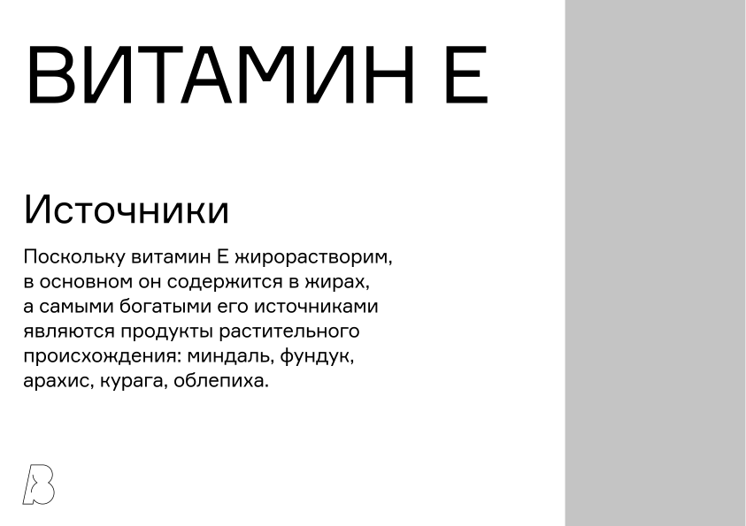
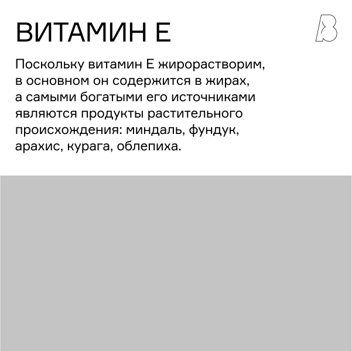
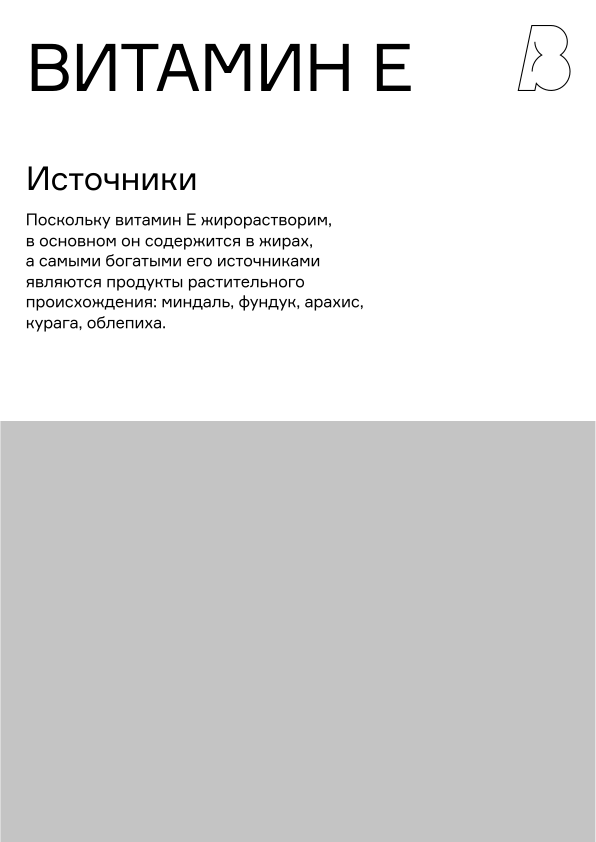
Сетка
Основным вдохновением для создания сетки послужили тетради и записные книги, поэтому в основу структуры носителей В8 были положены 24 строки, а затем добавлены 8 колонок.
> правила
Отступ от краев составляет 3% от ширины конкретного макета (округленное значение).
> вертикальный формат
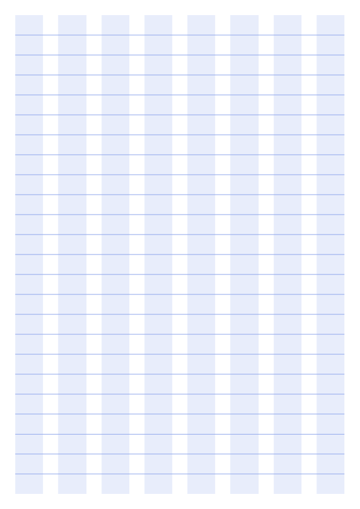
> квадрат
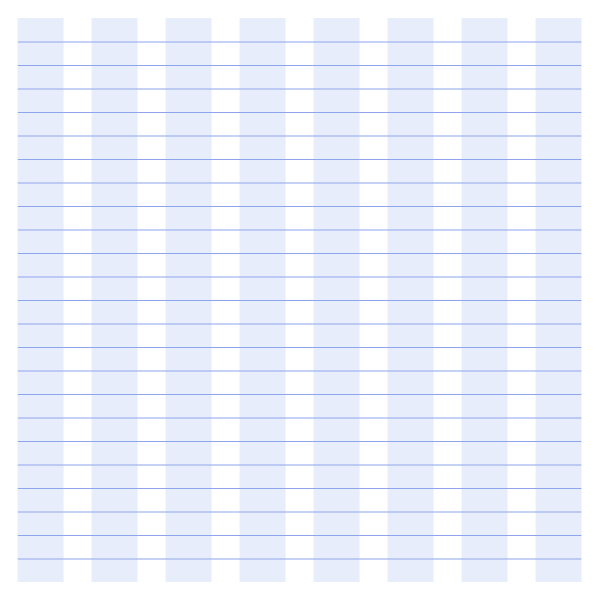
Фотография
> тематика
Фотографии демонстрируют мир растительной пищи во всей красе.
Они: солнечные, свежие, яркие, натуральные, заполненные, уютные, аппетитные.
> Первый тип
На снимке представлены продукты одного типа, которые полностью заполняют кадр, образуя текстуру. Съемка происходит сверху вниз.
Цветовая палитра данного типа фотографий подбирается в соответствии с дополнительными цветами айдентики.
> второй тип
Продукты находятся на прилавке, кадр охватывает большое пространство. Съемка осуществляется фронтально.
Цветовая палитра преимущественно земельных, теплых оттенков.
Дополнительная графика
> концепция
Дополнительная графика строится на изображении предметов, используемых в архивной/научной деятельности. В первую очередь это блокнотные листы с металлическими пружинами, скотч, стикеры, скрепки и многое другое.
> лист
Лист должен занимать всю площадь формата.
По желанию может использоваться изображение горизонтальных линий. Расстояние между ними зависит от размера кегля и может быть равно либо одну расстоянию между строк сетки, либо двум.
В обоих случаях линии не располагаются на первой и последней линиях сетки.
В обоих случаях расстояние, на которое текст поднимается от прилегающей горизонтальной линии, равен 4% от размера кегля.
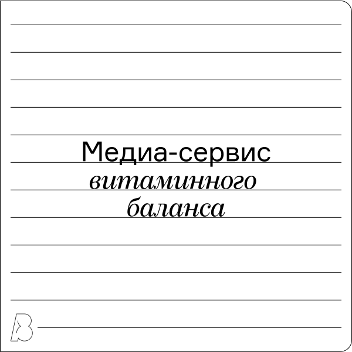
> архивный лист
Лист из архива имеет выступ на одном из трёх краёв: левом, правом или верхнем. Если он прилегает к краю формата, его размер равен отступу сетки от края. Если его расположение приходится на любой другой участок сетки, его размер будет равен расстоянию между строк сетки. По желанию лист может дублироваться со сдвигом.
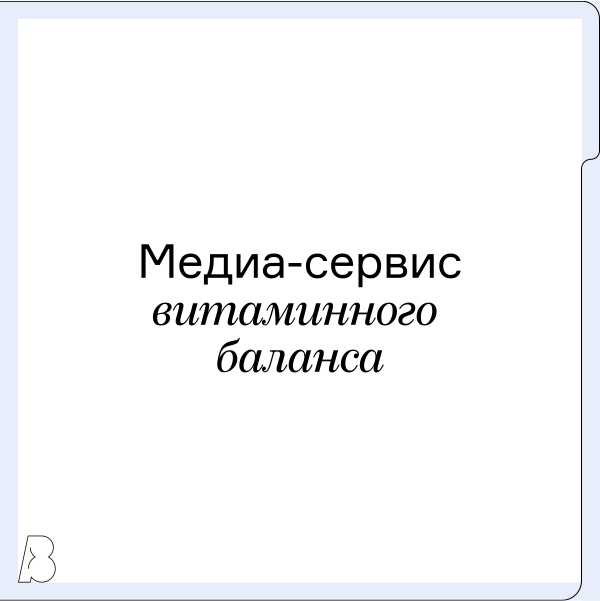
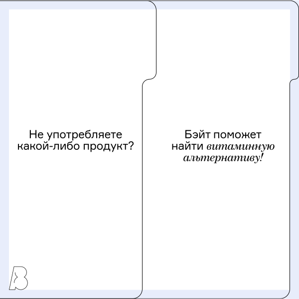
> пружина и перфорация
Окружности перфорации имеют диаметр, который меньше отступа сетки от края в два раза. Они расставляются через строку, исключая первую и последнюю горизонтальные линии сетки.
Изображение пружин расставляется в соответствии с положением окружностей.
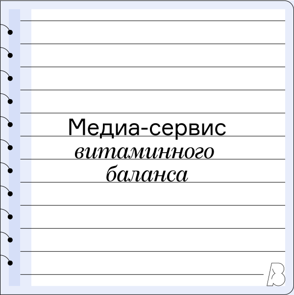
> дополнительно
В качестве второстепенной графики используются изображения стикера или скотча. Они имеют хаотичное положение и наклон.
Фотографии помещаются в рамку, напоминающую полароид.
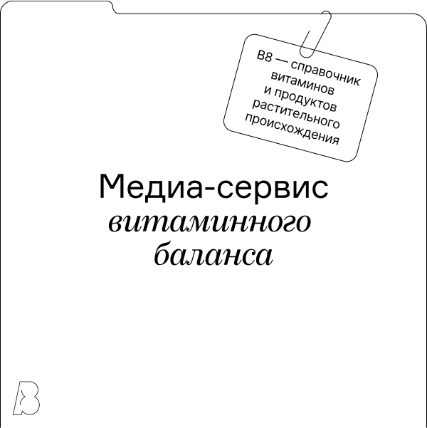
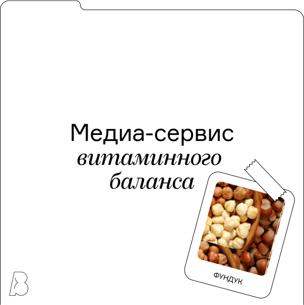
Также в графическую систему входят изображения овалов, которые являются метафорой микроэлементов, рассматриваемых под микроспкопом. Их рекомендуемое количество на единице формата — от 3 до 5.
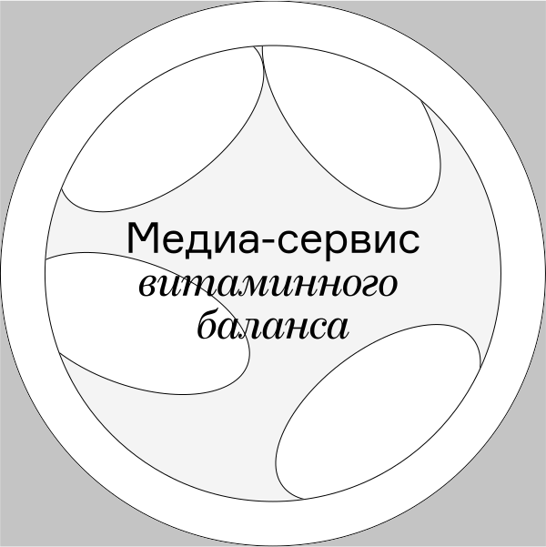
Тон оф войс
Наша миссия — дать возможность людям легко и быстро подобрать альтернативу продукту, который они не едят. Именно поэтому мы выбрали язык фактов, несмотря на то, что в мире много других языков.
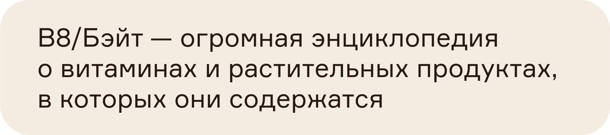
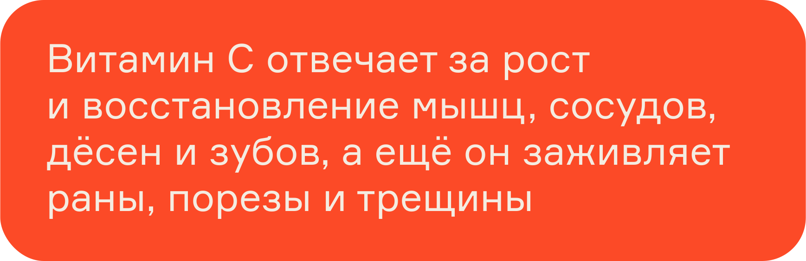
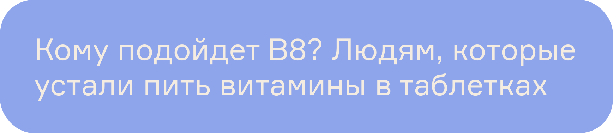